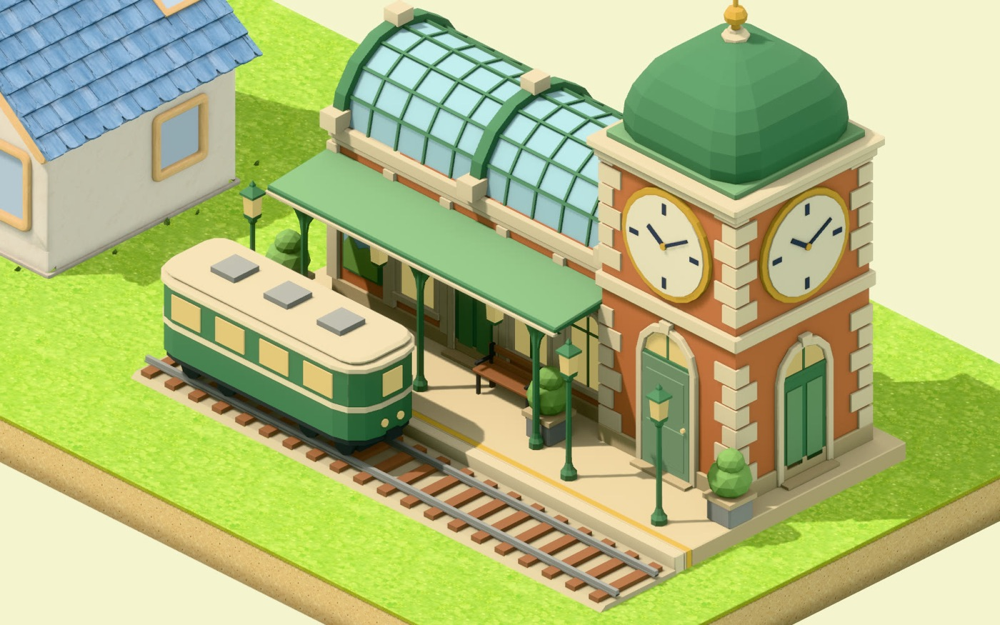

Hamlet · 27 Sep – 17 Oct 2026 · 中文 ·
A railway map of everything that went into Hamlet so far. Down the left runs Scarlet's line: the town as Scarlet will see it, one gentle stop at a time. Everything to the right of it is what each of those stops took to build.

Read it left to right: a piece is drawn and modelled, checked into the catalog, placed by the town's rules, then drawn by the renderer onto a screen. Underneath, the workshop is the AI team that builds every block. Tap any system for what it does and why it was hard.